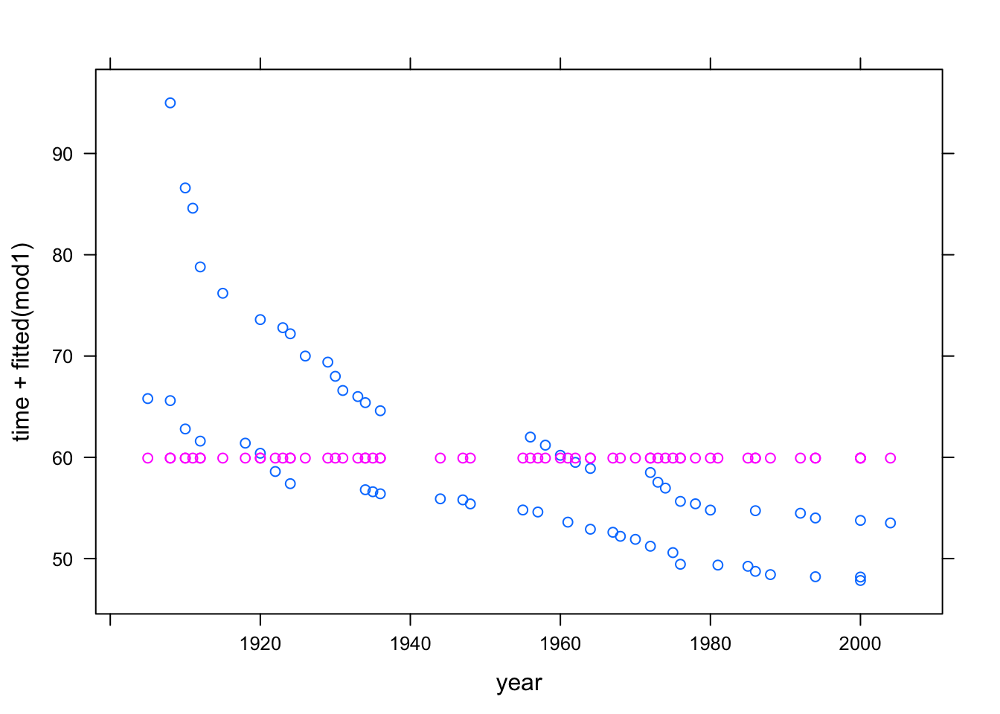

Chapter 6 Language of models
At the core of the language of modeling is the notation that uses the tilde character (~) to identify the response variable and the explanatory variables. This notation is incorporated into many of operators that you will use. As usual, many of the operators, as well as the datasets required in this section come from the mosaic package, so it should be loaded if it isn’t loaded already.
require(mosaic)To illustrate the computer commands for modeling and graphically displaying relationships between variables, use the utilities data set:
Utils <- Utilities # from mosaicDataSome of the following examples make particular use of these variables #. ccf — the natural gas usage in cubic feet during the billing period. #. month — the month coded as 1 to 12 for January to December. #. temp — the average temperature during the billing period.
Another illustrative example uses Current Population Survey wage data:`CPS`
CPS <- CPS85 # from mosaicDataand focuses on the variables wage, sex, and sector.
6.1 Bi-variate Plots
The basic idea of a bi-variate (two variable) plot is to examine one variable as it relates to another. The conventional format is to plot the response variable on the vertical axis and an explanatory variable on the horizontal axis.
6.1.1 Quantitative Explanatory Variable
When the explanatory variable is quantitative, a scatter-plot is an appropriate graphical format. In the scatter plot, each case is a single point.
The basic computer operator for making scatter plots is xyplot():
xyplot( ccf ~ temp, data = Utils)The first argument is a model formula written using the tilde modeling notation. This formula, ccf ~ temp is pronounced “ccf versus temperature.” It is traditional to plot the so-called dependent variable, here ccf, on the y–axis.
In order to keep the model notation concise, the model formula has left out the name of the data frame to which the variables belong. Instead, the frame is specified in the data = argument. Since data has been set to be Utils, the formula ccf ~ temp is effectively translated to Utils$ccf ~ Utils$temp.
You can specify the axis labels by hand, if you like. For example,
xyplot( ccf ~ temp, data=Utils,
xlab = "Temperature (deg F)",
ylab = "Natural Gas Usage (ccf)")6.1.2 Categorical Explanatory Variable
When the explanatory variable is categorical, an appropriate format of display is the box-and-whiskers plot, made with the bwplot operator. Here, for example, is the wage versus sex from the Current Population Survey:
bwplot( wage ~ sex, data=CPS)Notice that the outliers are setting the overall vertical scale for the graph and obscuring the detail at typical wage levels. You can use the ylim argument to set the scale of the y-axis however you want. For example:
bwplot(wage~sector, data=CPS, ylim=c(0,30) )You can also make side-by-side density plots which show more detail than the box-and-whisker plots. For instance:
densityplot( ~ wage, groups = sex, data = CPS, auto.key = TRUE )6.1.3 Multiple Explanatory Variables
The two-dimensional nature of paper or the computer screen lends itself well to displaying two variables: a response versus a single explanatory variable. Sometimes it is important to be able to add an additional explanatory variable. The graphics system gives a variety of options in this regard:
- Coding the additional explanatory variable] using color or symbol shapes. This is done by using the
groupsargument set to the name of the additional explanatory variable. For example:
xyplot( wage ~ age, groups = sex, data = CPS,
auto.key = TRUE)- Splitting the plot into the groups defined by the additional explanatory variable. This is done by including the additional variable in the model formula using a
|separator. For example:
xyplot( wage ~ age | sex, data = CPS)6.2 Fitting Models and Finding Model Values
The lm operator (short for “Linear Model”) will translate a model design into fitted model values.
It does this by “fitting” the model to data, a process that will be explained in later chapters. For now, focus on how to use lm to compute the fitted model values.
The lm operator uses the same model language as in the book. To illustrate, consider the world-record swim-times data :
Swim <- read.csv("http://tiny.cc/mosaic/swim100m.csv")To construct the model time ~ 1 for the swim data:
mod1 <- lm( time ~ 1, data = Swim)Here the model has been given a name, mod1, so that you can refer to it later. You can use any name you like, so long as it is valid in R.
Once the model has been constructed, the fitted values can be found using the fitted operator:
fitted(mod1)## 1 2 3 4 5 6 7 8 9 10 11
## 59.92419 59.92419 59.92419 59.92419 59.92419 59.92419 59.92419 59.92419 59.92419 59.92419 59.92419
## 12 13 14 15 16 17 18 19 20 21 22
## 59.92419 59.92419 59.92419 59.92419 59.92419 59.92419 59.92419 59.92419 59.92419 59.92419 59.92419
## 23 24 25 26 27 28 29 30 31 32 33
## 59.92419 59.92419 59.92419 59.92419 59.92419 59.92419 59.92419 59.92419 59.92419 59.92419 59.92419
## 34 35 36 37 38 39 40 41 42 43 44
## 59.92419 59.92419 59.92419 59.92419 59.92419 59.92419 59.92419 59.92419 59.92419 59.92419 59.92419
## 45 46 47 48 49 50 51 52 53 54 55
## 59.92419 59.92419 59.92419 59.92419 59.92419 59.92419 59.92419 59.92419 59.92419 59.92419 59.92419
## 56 57 58 59 60 61 62
## 59.92419 59.92419 59.92419 59.92419 59.92419 59.92419 59.92419There is an individual fitted model value for each case. Of course, in this model all the model values are exactly the same since the model time ~ 1 treats all the cases as exactly the same.
In later chapters you’ll see how to analyze the model values, make predictions from the model, and assess the contribution of each model term. For now, just look at the model values by plotting them out along with the data used. Plot out both the data values and the model values versus year just to emphasize that the model values are the same for every case:
xyplot( time + fitted(mod1) ~ year, data = Swim)
Pay careful attention to the syntax used in the above command. There are two quantities to the left of the ~. This is not part of the modeling language, where there is always a single response variable. Instead, it is a kind of shorthand, telling xyplot that it should plot out both of the quantities on the left side against the quantity on the right side. Of course, if you wanted to plot just the model values, without the actual data, you could specify the formula as fitted(mod1) ~ year.
Here are more interesting models:
mod2 <- lm( time ~ 1 + year, data = Swim)
mod3 <- lm( time ~ 1 + sex, data = Swim)
mod4 <- lm( time ~ 1 + sex + year, data = Swim)
mod5 <- lm( time ~ 1 + year + sex + year:sex, data = Swim)You can, if you like, compare the fitted values from different models on one plot:
xyplot( fitted(mod5) + fitted(mod3) ~ year, data = Swim,
auto.key = TRUE)6.2.1 Interactions and Main Effects
Typically a model that includes an interaction term between two variables will include the main terms from those variables too. As a shorthand for this, the modeling language has a * symbol. So, the formula time ~ year + sex + year:sex can also be written time ~ year * sex.
6.2.2 Transformation Terms
Transformation terms such as squares can also be included in the model formula. To mark the quantity clearly as a single term, it’s best to wrap the term with I() as follows:
mod7 <- lm( time ~ year + I(year^2) + sex, data = Swim)Another way to accomplish this, for polynomials, is to use the operator poly as in the model formula time ~ poly(year,2) + sex.
Here’s a plot of the result:
xyplot( time + fitted(mod7) ~ year, data = Swim)